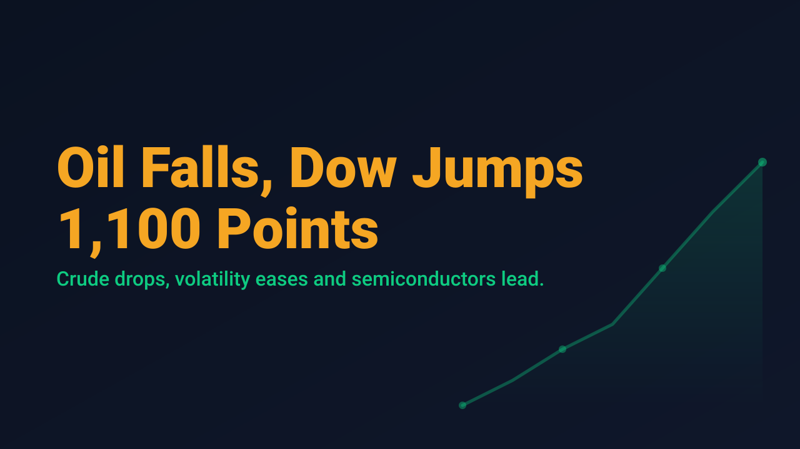
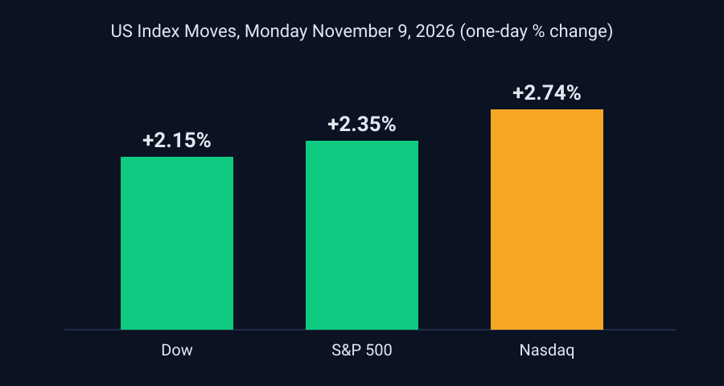

Oil Falls, Dow Jumps 1,100 Points

US equities rallied broadly on Monday, November 9, as a sharp decline in crude oil coincided with a retreat in volatility. The S&P 500 gained 2.35% to close at 7,549.94, the Nasdaq Composite rose 2.74% to 25,253.14, and the Dow Jones Industrial Average advanced 2.15%, a gain of more than 1,100 points. The Russell 2000 outperformed the large-cap benchmarks with a 3.15% advance, according to figures compiled by JournalArta.
Energy was the proximate driver. Brent crude fell by more than 5% and WTI by more than 4%, and coverage attributed the broad advance to the drop in oil and the easing of inflation and geopolitical concerns. The VIX fell to 20.02 from 25.64, a decline of roughly 22%. The 10-year Treasury yield held near 4.86%, which suggests the equity move was driven by risk appetite and the oil decline rather than by any relief in the rates market.

Leadership was concentrated in semiconductors and AI infrastructure, though not uniformly. AMD, Marvell Technology and Taiwan Semiconductor posted substantial gains, while Nvidia fell more than 4% after it reportedly launched an independent investigation into its chief executive over reports he may have been a target of foreign intelligence activity, per TradingKey. TradingKey also noted a Morgan Stanley view that the market had overreacted to concerns about AI data center construction. Outside technology, Constellation Energy rose more than 10% after reporting third-quarter adjusted operating earnings of $5.06 per share, up from $3.04, and raising its full-year guidance to a range of $12.50 to $12.80.
For swing traders, the session illustrates how a macro input can reprice the entire tape in a single day while leaving individual names moving in opposite directions. A day on which the Dow gains 1,100 points and Nvidia falls more than 4% is not a clean trend signal. It is a rotation inside a rally, and entries taken into that kind of move carry different risk than entries taken into an orderly advance.
The more relevant question for a swing entry is whether Monday's strength is supported by durable inputs or by a single oil headline. A one-day volatility drop from 25.64 to 20.02 still leaves the VIX at an elevated level, and oil-driven rallies can reverse as quickly as they form.
Monday offered a clear example of why a headline index gain should not be treated as a trade signal. Traders who want to act on the move can use the next sessions to see whether oil stabilizes, whether volatility continues to compress, and whether semiconductor strength broadens or narrows. Position size and invalidation levels matter more than conviction when a single commodity move is doing much of the work.